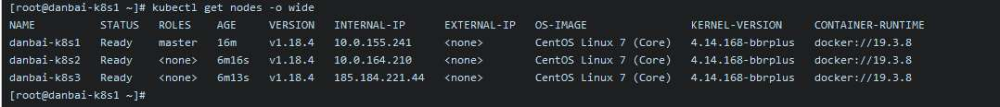

K8s安装以及使用
- 作者:
- 淡白
- 创建时间：
- 2020-07-09 08:09:29
- k8s
摘要：本文介绍了在进行安装之前的准备工作，包括修改主机名、关闭防火墙、关闭swap分区和关闭SELinux。然后，文中提供了安装k8s的详细教程，并包括了初始化master节点和worker节点的步骤。最后，介绍了安装Ingress Controller的步骤。文章给出了一些参考链接供读者参考。
安装
其实在本次安装前，我已经完成了一次安装。然后我在 master 节点上安装宝塔控制面板导致服务器网络不可用了，服务器重启也没有恢复.今天把系统重装了重新安装。
目前配置
- 服务器4台
- 都有外内网IP
- 都是4C4G
- 在一个内网
- 内网ip分别为10.0.91.46(bt)、10.0.155.241(k8s1)、10.0.164.210(k8s2)、10.0.129.69(k8s3)
安装分配
k8s为一主两从,另外一台安装宝塔以及 MySQL、Redis。
宝塔安装：10.0.91.46(bt) master：10.0.155.241(k8s1) 从节点：10.0.164.210(k8s2)、10.0.129.69(k8s3)
开始前的准备
修改主机名：
hostnamectl set-hostname danbai-bt # 将 danbai-bt 替换为当前主机名
加入到host
cat >> /etc/hosts <<EOF
10.0.91.46 danbai-bt
10.0.155.241 danbai-k8s1
10.0.164.210 danbai-k8s2
10.0.129.69 danbai-k8s2
EOF
关闭防火墙
关闭防火墙，清理防火墙规则，设置默认转发策略：
systemctl stop firewalld
systemctl disable firewalld
iptables -F && iptables -X && iptables -F -t nat && iptables -X -t nat
iptables -P FORWARD ACCEPT
关闭 swap 分区
关闭 swap 分区，否则kubelet 会启动失败(可以设置 kubelet 启动参数 –fail-swap-on 为 false 关闭 swap 检查)：
swapoff -a
sed -i '/ swap / s/^\(.*\)$/#\1/g' /etc/fstab
关闭 SELinux
关闭 SELinux，否则 kubelet 挂载目录时可能报错 Permission denied：
setenforce 0
sed -i 's/^SELINUX=.*/SELINUX=disabled/' /etc/selinux/config
开始安装（k8s）
详细教程 安装以下软件：
- docker
- nfs-utils
- kubectl / kubeadm / kubelet
export REGISTRY_MIRROR=https://mirror.ccs.tencentyun.com
curl -sSL https://kuboard.cn/install-script/v1.18.x/install_kubelet.sh | sh -s 1.18.4
初始化master
# 只在 master 节点执行
# 替换 x.x.x.x 为 master 节点实际 IP（请使用内网 IP）
# export 命令只在当前 shell 会话中有效，开启新的 shell 窗口后，如果要继续安装过程，请重新执行此处的 export 命令
export MASTER_IP=x.x.x.x
# 替换 apiserver.demo 为 您想要的 dnsName
export APISERVER_NAME=apiserver.demo
# Kubernetes 容器组所在的网段，该网段安装完成后，由 kubernetes 创建，事先并不存在于您的物理网络中
export POD_SUBNET=10.100.0.1/16
echo "${MASTER_IP} ${APISERVER_NAME}" >> /etc/hosts
curl -sSL https://kuboard.cn/install-script/v1.18.x/init_master.sh | sh -s 1.18.3
检查
# 只在 master 节点执行
# 执行如下命令，等待 3-10 分钟，直到所有的容器组处于 Running 状态
watch kubectl get pod -n kube-system -o wide
# 查看 master 节点初始化结果
kubectl get nodes -o wide
初始化worker节点
获得 join命令参数
# 只在 master 节点执行
kubeadm token create --print-join-command
针对所有的 worker 节点执行
# 只在 worker 节点执行
# 替换 x.x.x.x 为 master 节点的内网 IP
export MASTER_IP=x.x.x.x
# 替换 apiserver.demo 为初始化 master 节点时所使用的 APISERVER_NAME
export APISERVER_NAME=apiserver.demo
echo "${MASTER_IP} ${APISERVER_NAME}" >> /etc/hosts
# 替换为 master 节点上 kubeadm token create 命令的输出
kubeadm join apiserver.demo:6443 --token mpfjma.4vjjg8flqihor4vt --discovery-token-ca-cert-hash sha256:6f7a8e40a810323672de5eee6f4d19aa2dbdb38411845a1bf5dd63485c43d303
检查
# 只在 master 节点执行
kubectl get nodes -o wide
输出结果如下所示：
[root@demo-master-a-1 ~]# kubectl get nodes
NAME STATUS ROLES AGE VERSION
demo-master-a-1 Ready master 5m3s v1.18.x
demo-worker-a-1 Ready <none> 2m26s v1.18.x
demo-worker-a-2 Ready <none> 3m56s v1.18.x
安装 Ingress Controller
这里我就没有安装我通过bt服务器内nginx对外服务
# 只在 master 节点执行
kubectl apply -f https://kuboard.cn/install-script/v1.18.x/nginx-ingress.yaml
安装完成
